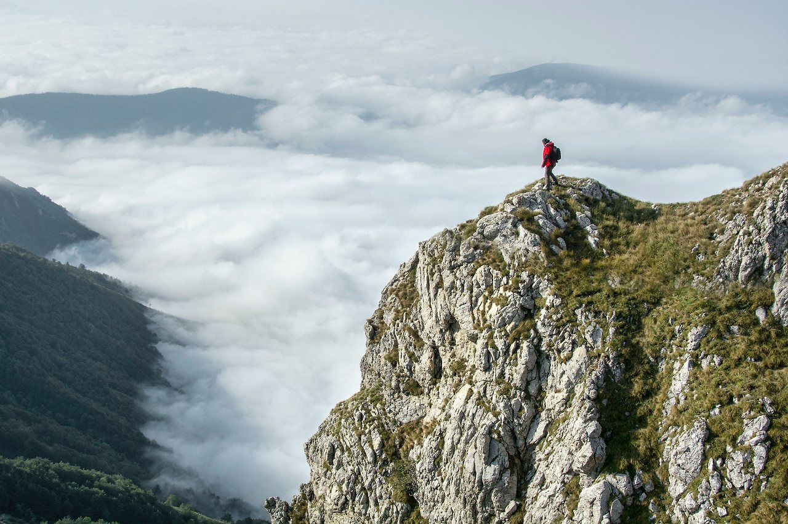

📂 매거진: 스타트업 리더의 기술
등산
Oct 23. 2023

오늘은 동기형과 관악산에 다녀왔습니다.
휴일이어서 그런지 산의 입구에는 정말이지 많은 사람들이 있었습니다.
'우와~ 저 많은 사람들과 어떻게 정상까지 올라가지?' 하고 겁을 먹을 정도로...
중간에 내려가자는 동기형을 채찍질해 정상까지 올라갔습니다.
막상 정상에 오르니 정말이지 한적할 정도로 사람이 없더군요.
.
.
.
많은 사람들이 산의 정상에 오르겠노라고 산에 들어서지만
산의 정상을 정복하는 사람은 소수에 불과합니다.
성공이라는 산도 마찬가지인 거 같습니다.
2004년 5월에 쓴 글입니다.